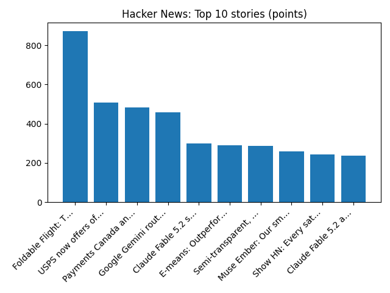

EXCLUSIVE: Anthropic eyes $1.4 trillion IPO valuation in test of Wall Street's AI fervor - Reuters
Reuters — Headlines (Google News)
YOUR DAILY INTELLIGENCE BRIEF · 2026-11-10
Global watch: EXCLUSIVE: Anthropic eyes $1.4 trillion IPO valuation in test of Wall Street's AI fervor - Reuters, Hegseth slams his potential impeachment as a 'political spectacle’ that undermines US troops - AP News.
Northern Virginia: How a Northern Virginia youth group home is trying to get it right - The Washington Post, Naresh Bhatt murder trial: Virginia man says he dismembered missing wife Mamta Kafle Bhat's body in 2024 - ABC11 News.

Global coverage includes EXCLUSIVE: Anthropic eyes $1.4 trillion IPO valuation in test of Wall Street's AI fervor - Reuters; Hegseth slams his potential impeachment as a 'political spectacle’ that undermines US troops - AP News; Arrests made in Mohamed Al Fayed probe in France, police say. Local coverage includes How a Northern Virginia youth group home is trying to get it right - The Washington Post; Naresh Bhatt murder trial: Virginia man says he dismembered missing wife Mamta Kafle Bhat's body in 2024 - ABC11 News.

SRAM Corporation
SRAM developed the Eagle line of mountain bike specific drivetrain components intended to improve shifting performance. The company grew to become a cycling component brand, selling under the brands SRAM, Avid, RockShox, Truvativ, Quarq, Zipp, TIME Sport pedals, Hammerhead cycling computers, and Velocio cycling apparel.
https://en.wikipedia.org/wiki/SRAM_Corporation
Runs so far today: 2